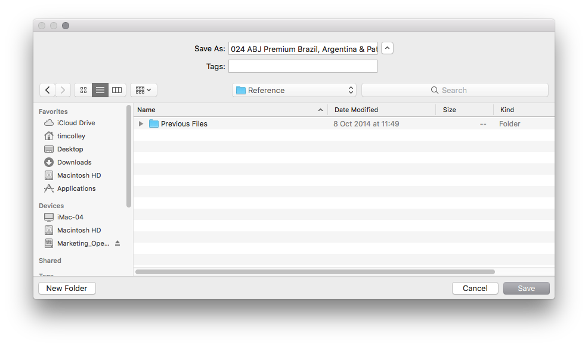

First Look
First Look
Building Your Grid
Exporting and saving your grid to a folder.
When you have set all of your options, tour selections and date ranges, you should be ready to build the grid. To do this, simply click 'Build Price Grid' in the lower right of the app. All being well, you will be presented with a window that asks where you would like to save the file.
Try to choos a meaningful place to save your files, such as the 'Reference folder' inside your Job Folder on the 'Shared Data' drive. this way all of your grids will be with the project to which they're assigned.

When you have saves your file, you will have a file called an 'InDesign Snippet' or an 'IDMS' file, these are file used by InDesign for small pieces of artwork. You can create you own snippets from any artwork, simply by dragging any element from a page or design to your desktop.
HINT: When saving your files, why not put the page number that the grid belogns to at the beginning of the file name? that way when you have all of your grids, they'll be in the correct order for use when you're ready to place them on page.